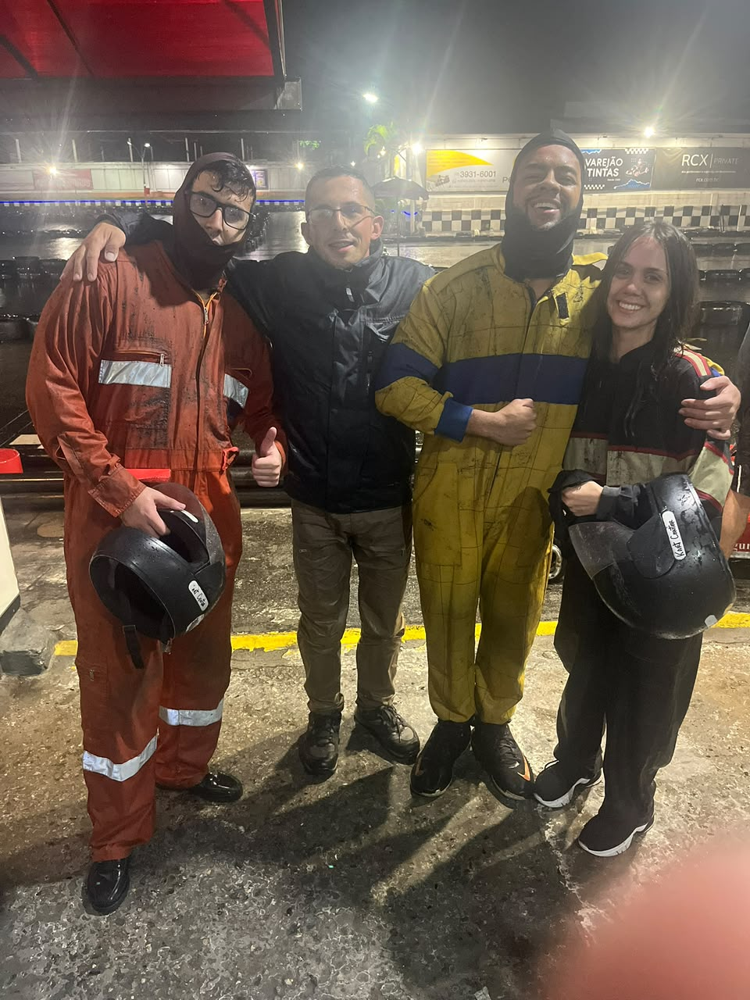
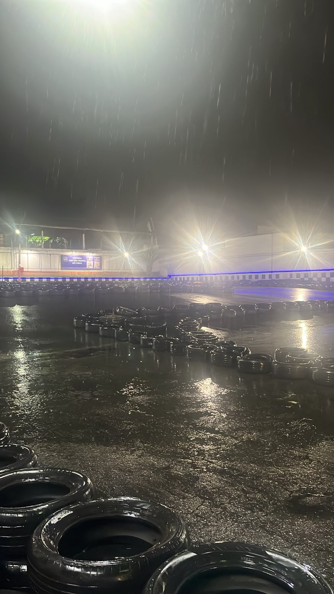
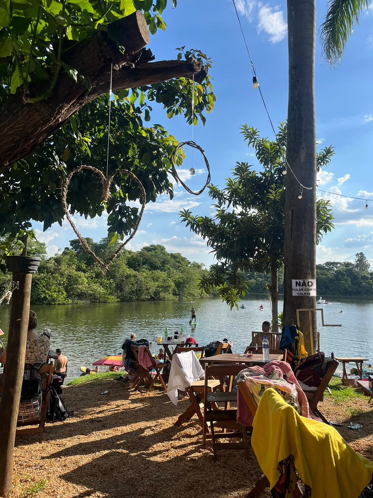

Visiona : voir le Brésil autrement
Un entretien avec des mots français en tête, une équipe accueillante et la découverte de l’ingénierie système.
J’ai rejoint Visiona juste après mon retour de France au Brésil. J’arrivais avec tout ce que j’avais appris à l’étranger, mais je connaissais encore mal l’industrie spatiale de mon propre pays. Ce stage a changé mon regard et m’a aidée à comprendre ce que j’aimais faire en tant qu’ingénieure.
Un entretien en portugais, la tête en français
L’entretien était en portugais, évidemment. Mais je revenais d’une période où je parlais français ou anglais toute la journée. Ma tête n’avait pas encore changé de langue.
Une grande partie de mes connaissances en systèmes embarqués et en satellites, je l’avais acquise en France. Parfois, je savais exactement ce que je voulais expliquer, mais le terme technique ne me venait qu’en français. C’était étrange de rentrer dans mon pays et de chercher mes mots dans ma propre langue.
Une équipe qui m’a accueillie
L’équipe m’a très bien accueillie dès le début. Le stage aurait normalement dû se faire sur place, mais une exception m’a permis de travailler à distance. J’y ai énormément appris. Pendant mes vacances, je suis allée passer du temps avec eux en présentiel.
Une part importante de mes débuts consistait à discuter avec mes responsables et à écouter l’histoire des projets de l’entreprise. Je voulais comprendre le chemin parcouru pour en arriver là.

La technologie que nous avons ici
J’avais déjà travaillé sur un projet de satellite brésilien, mais je n’avais pas encore découvert cette facette de l’industrie de l’intérieur. Chez Visiona, j’ai rencontré des personnes aux compétences techniques extraordinaires. Voir ce que cette équipe pouvait construire m’a fait remettre en question des idées que je portais, parfois sans m’en rendre compte, sur la technologie au Brésil.
L’un des jalons de cette histoire est VCUB1, lancé en 2023 : un nanosatellite pionnier d’observation de la Terre et de collecte de données conçu par l’industrie brésilienne.
En 2023, la Finep a annoncé environ 220 millions de réaux pour un projet de satellite d’observation de la Terre à haute résolution mené par Visiona, sa plus importante subvention économique à cette date.
Et j’étais là, à contribuer à un projet de cette ampleur. Peu à peu, j’ai commencé à comprendre comment mon travail s’inscrivait dans un ensemble beaucoup plus vaste. Cela donnait un autre sens à ce que je faisais.
Trouver ma voie vers l’ingénierie système
Je travaillais sur le logiciel de vol, mais j’ai aussi beaucoup appris en ingénierie système, en intégration et en opérations satellitaires. Je m’intéressais de plus en plus à la manière dont tout s’articulait.
Avec ma formation, je pensais devoir rester concentrée sur le logiciel embarqué. Puis j’ai réalisé à quel point j’aimais tester, examiner les cas, réfléchir à ce qui pouvait mal se passer et repérer les erreurs. J’aimais devoir questionner les choses et regarder de près les situations moins évidentes.
Cet intérêt pour l’ingénierie système est apparu presque naturellement. Visiona m’a aidée à le reconnaître dans le travail que j’aimais faire au quotidien.
Découvrir le LIT sur place
Pendant mon séjour sur place, j’ai visité le Laboratoire d’intégration et d’essais de l’INPE, le LIT. Il dispose d’installations pour assembler, intégrer et qualifier des systèmes spatiaux, notamment grâce à des essais reproduisant les conditions de l’environnement spatial.
Voir de près les chambres à vide thermique, les équipements d’essais vibratoires et la chambre anéchoïque était incroyable. La taille de la grande chambre à vide thermique m’a vraiment impressionnée. J’ai aussi pu voir sur place le travail d’intégration d’un satellite.
Je travaillais déjà dans le secteur, et il y avait encore tant de compétences techniques au Brésil que je ne connaissais pas. Je suis repartie avec l’envie d’en savoir plus. Je ne peux pas partager les images du satellite ni les détails internes, mais ces photos des installations me rappellent cette sensation de découverte.


Et les moments en dehors du travail
Il y a aussi eu des moments ensemble en dehors du travail, comme cette soirée jeux. Pour quelqu’un qui travaillait à distance, pouvoir être là en personne comptait beaucoup. Je suis rentrée avec de nouveaux apprentissages, des souvenirs avec l’équipe et une vision bien plus concrète de l’industrie dont je voulais faire partie.
En dehors de Visiona, je me suis aussi fait des amis dans la maison où je logeais. Nous avions des âges et des métiers très différents, et j’ai adoré découvrir des personnes dont le quotidien était si éloigné du mien. Ils sont devenus des amis proches.
Nous avons fait du karting sous la pluie et des sorties dans des parcs. Ces photos ont leur place ici aussi : ce séjour m’a permis de découvrir le travail sur place, mais aussi de partager un bout de vie avec des personnes que je n’aurais peut-être jamais rencontrées par l’ingénierie seule.







Chez Visiona, j’ai beaucoup appris sur les satellites, sur le Brésil et sur le travail qui me donne envie d’en apprendre davantage. J’ai adoré découvrir tout cela de près.